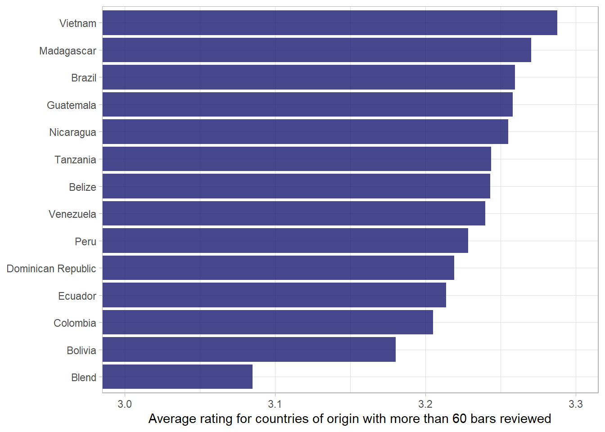

library(tidyverse)
df <- readr::read_csv('https://raw.githubusercontent.com/rfordatascience/tidytuesday/master/data/2022/2022-01-18/chocolate.csv')
theme_set(theme_light())Chocolate bar ratings
An exploration of chocolte bar ratings
Hello and welcome to the first episode of Kathy’s coding club. Today we’re doing to be looking at one of Kathy’s favourite foodstuffs – chocolate.
We’re going to be diving into the reviews of chocolate bars from the Manhattan Chocolate Society, who have rated over 2500 chocolate bars from around the world. We are going to be trying to answer a few questions about their ratings.
The data is accessible from the R for Data Science Tidy Tuesday repository on Github.
If you have any questions about the different commands that we use and why - have a look at this post on my website. You can click on any of the commands and read the documentation to get a better understanding of how they are used, or which package they are from.
Then let’s get to it - the first step is to open a fresh Rmarkdown document - this allows you to keep human readable notes interspersed with your code that you can return to later, and export the prose and code in a number of different ways to share it, with colleagues or on the internet.
The next thing which I think is worth doing is to change the default IDE theme in Rstudio to darkmode. This is easier on your eyes and makes you look professional. You can find the Rstudio appearance settings under tools, and then global options. I like the Cobalt theme, but there are many to choose from.
One other thing I would suggest is the use of rainbow parentheses - these make it easy to see where you’re missing a bracket. You can enable them under the code tab in Global options.
Great - then let’s get to it!
First we will call the tidyverse meta package - a cohesive group of packages that make working with messy data very easy - originally coined by Hadley Wickham but improved upon by a great many contributors. I’ll leave a link in the description to more info about this.
Then we read in the data from the R4DS Tidy Tuesday Repo.
Exploratory data analysis
First we can have a look at the data we have read in - This gives us a tibble (similar to a dataframe) with 10 columns (3 numeric and 7 character) and 2,530 individual reviews.
| Name | Piped data |
| Number of rows | 2530 |
| Number of columns | 10 |
| _______________________ | |
| Column type frequency: | |
| character | 7 |
| numeric | 3 |
| ________________________ | |
| Group variables | None |
Variable type: character
| skim_variable | n_missing | complete_rate | min | max | empty | n_unique | whitespace |
|---|---|---|---|---|---|---|---|
| company_manufacturer | 0 | 1.00 | 2 | 39 | 0 | 580 | 0 |
| company_location | 0 | 1.00 | 4 | 21 | 0 | 67 | 0 |
| country_of_bean_origin | 0 | 1.00 | 4 | 21 | 0 | 62 | 0 |
| specific_bean_origin_or_bar_name | 0 | 1.00 | 3 | 51 | 0 | 1605 | 0 |
| cocoa_percent | 0 | 1.00 | 3 | 6 | 0 | 46 | 0 |
| ingredients | 87 | 0.97 | 4 | 14 | 0 | 21 | 0 |
| most_memorable_characteristics | 0 | 1.00 | 3 | 37 | 0 | 2487 | 0 |
Variable type: numeric
| skim_variable | n_missing | complete_rate | mean | sd | p0 | p25 | p50 | p75 | p100 | hist |
|---|---|---|---|---|---|---|---|---|---|---|
| ref | 0 | 1 | 1429.80 | 757.65 | 5 | 802 | 1454.00 | 2079.0 | 2712 | ▆▇▇▇▇ |
| review_date | 0 | 1 | 2014.37 | 3.97 | 2006 | 2012 | 2015.00 | 2018.0 | 2021 | ▃▅▇▆▅ |
| rating | 0 | 1 | 3.20 | 0.45 | 1 | 3 | 3.25 | 3.5 | 4 | ▁▁▅▇▇ |
Next we can look at some of the common countries in which the beans are processed into bars, as well as where the beans originate.
# A tibble: 67 x 2
company_location n
<chr> <int>
1 U.S.A. 1136
2 Canada 177
3 France 176
4 U.K. 133
5 Italy 78
6 Belgium 63
7 Ecuador 58
8 Australia 53
9 Switzerland 44
10 Germany 42
# ... with 57 more rows# A tibble: 62 x 2
country_of_bean_origin n
<chr> <int>
1 Venezuela 253
2 Peru 244
3 Dominican Republic 226
4 Ecuador 219
5 Madagascar 177
6 Blend 156
7 Nicaragua 100
8 Bolivia 80
9 Colombia 79
10 Tanzania 79
# ... with 52 more rowsLooking at the bar ratings, we can see a distribution that is centred just above 3 - this is in line with what we saw from the skim of the dataset above - a mean rating of 3.2
df %>%
ggplot(aes(rating)) +
geom_histogram(binwidth = .25, fill = "midnightblue") +
labs(x = "Chocolate bar rating",
y = "Number of bars")Initial questions
- Have ratings been going up over time?
The first simple plot we can make to examine this question is a boxplot - we can use ggplot to create a boxplot, mapping review date to the x axis, rating to the y axis, and we include the command group = review_date.
df %>%
ggplot(aes(review_date, rating, group = review_date)) +
geom_boxplot()
Great - we can see that the median ranges between 3 and 3.25, increasing in 2010. We can also see that the bottom of the distribution has moved up over time. In other words, there are fewer low scoring chocolate bars over time - potentially indicating an increase in quality of the bars or greater leniency on the part of the reviewers.
We can visualize this distribution with the help of another package called ggridges.
I’ll build up this visualization in stages:
We’ll start by mapping the ratings onto the x-axis, the year of the review onto the y-axis (as a factor rather than as a continuous variable).
Great - we can see that the pattern we saw earlier is clear - as time increases up the y-axis, the share of bars receiving reviews below three decreases.
Next we can add in a colour scale for the fill:
df %>%
ggplot(aes(rating, y = factor(review_date), fill = review_date)) +
geom_density_ridges() +
scale_fill_viridis_c(option = "magma")
The viridis colour scales are nice for two reasons - they’re discernible to people with most forms of colour blindness and print well if you only use black and white. The magma option gives a nice fade from purple to yellow.
Next we can move the colourbar in the legend to the bottom and increase it in size, and add some labels.
df %>%
ggplot(aes(rating, y = factor(review_date), fill = review_date)) +
geom_density_ridges() +
scale_fill_viridis_c(option = "magma") +
theme(legend.position = "bottom") +
guides(fill = guide_colorbar(
title.position = "bottom",
barwidth = 25,
title.hjust = .5
)) +
labs(y = NULL,
x = "Chocolate bar rating",
fill = "Date of review")What can we learn about the number of ingredients and cocoa percentage?
Selecting the ingredients column, we see that it has the number of ingredients and each ingredient listed after a dash and separated by commas.
# A tibble: 2,530 x 1
ingredients
<chr>
1 3- B,S,C
2 3- B,S,C
3 3- B,S,C
4 3- B,S,C
5 3- B,S,C
6 3- B,S,C
7 3- B,S,C
8 4- B,S,C,L
9 4- B,S,C,L
10 4- B,S,C,L
# ... with 2,520 more rowsThe chocolate bar ingredients are:
str <- "B = Beans, S = Sugar, S* = Sweetener other than white cane or beet sugar, C = Cocoa Butter, V = Vanilla, L = Lecithin, Sa = Salt"
str <- str %>%
as_tibble() %>%
separate_rows(value, sep = ",") %>%
separate(value, c("key", "value"), "=") %>%
mutate(across(c(key, value), str_squish))
knitr::kable(str)| key | value |
|---|---|
| B | Beans |
| S | Sugar |
| S* | Sweetener other than white cane or beet sugar |
| C | Cocoa Butter |
| V | Vanilla |
| L | Lecithin |
| Sa | Salt |
df <- df %>%
mutate(ingredients = str_replace_all(ingredients, c("Sa" = "salt",
# the * is a special character
# when writing Regex and so
# we use the two backslashes to
# "escape" the meaning
"S\\*" = "non_sugar_sweetener",
"B" = "beans",
"S" = "sugar",
"V" = "vanilla",
"L" = "lecithin",
"C" = "cocoa_butter"
)))We can use the separate function from dplyr to split the ingredients column into two columns, based on the dash which splits the two components.
The separate function takes three inputs: 1. the column which you want to split, 2. a character vector of new column names, and 3. finally the regex which separates the columns.
df %>%
separate(ingredients,
into = c("n_ingredients", "ingredients"),
sep = "-") %>%
select(n_ingredients, ingredients) %>%
mutate(n_ingredients = parse_number(n_ingredients))# A tibble: 2,530 x 2
n_ingredients ingredients
<dbl> <chr>
1 3 " beans,sugar,cocoa_butter"
2 3 " beans,sugar,cocoa_butter"
3 3 " beans,sugar,cocoa_butter"
4 3 " beans,sugar,cocoa_butter"
5 3 " beans,sugar,cocoa_butter"
6 3 " beans,sugar,cocoa_butter"
7 3 " beans,sugar,cocoa_butter"
8 4 " beans,sugar,cocoa_butter,lecithin"
9 4 " beans,sugar,cocoa_butter,lecithin"
10 4 " beans,sugar,cocoa_butter,lecithin"
# ... with 2,520 more rowsWith the number of ingredients in it’s own column now we can ask what share of the chocolate bars
# jpeg(filename = "figures/Chocolate_bar_ratings.jpeg",
# height = 6,
# width = 8,
# units = "in",
# res = 1000)
df %>%
separate(ingredients, into = c("n_ingredients", "ingredients"), sep = "-") %>%
mutate(across(c(n_ingredients, cocoa_percent), parse_number),
cocoa_percent = cocoa_percent - cocoa_percent %% 5) %>%
count(cocoa_percent, n_ingredients) %>%
ggplot(aes(cocoa_percent, n_ingredients, fill = n)) +
geom_tile() +
scale_fill_viridis_c() +
scale_x_continuous(labels = scales::percent_format(scale = 1)) +
labs(x = "Cocoa percent",
y = "Number of ingredients",
fill = "Number of bars")
# dev.off()What is the correlation between ingredients that are used together?
df <- df %>%
separate(ingredients, into = c("n_ingredients", "ingredients"), sep = "-") %>%
separate_rows(ingredients, sep = ",") %>%
filter(!is.na(ingredients)) %>%
pivot_wider(names_from = ingredients, values_from = ingredients) %>%
mutate(across(beans:non_sugar_sweetener, ~ ifelse(is.na(.), 0, 1)))What do we know about the countries of origin?
df %>%
add_count(country_of_bean_origin) %>%
# only include countries with more than 60 bars
filter(n > 60) %>%
group_by(country_of_bean_origin) %>%
summarise(mean_rating = mean(rating)) %>%
mutate(country_of_bean_origin = fct_reorder(country_of_bean_origin, mean_rating)) %>%
ggplot(aes(mean_rating, country_of_bean_origin)) +
geom_col(fill = "midnightblue", alpha = .8) +
# ensure that x-axis looks appropriate.
coord_cartesian(xlim = c(3,3.3)) +
labs(x = "Average rating for countries of origin with more than 60 bars reviewed",
y = NULL)
What are some fun variables??
df %>%
select(most_memorable_characteristics, rating) %>%
separate_rows(most_memorable_characteristics, sep = ",") %>%
mutate(across(most_memorable_characteristics, str_squish)) %>%
add_count(most_memorable_characteristics) %>%
filter(n > 15) %>%
group_by(most_memorable_characteristics) %>%
summarise(mean_rating = mean(rating)) %>%
ungroup() %>%
arrange(mean_rating) %>%
slice(1:10, 69:78)# A tibble: 20 x 2
most_memorable_characteristics mean_rating
<chr> <dbl>
1 chemical 2.5
2 medicinal 2.55
3 off notes 2.58
4 burnt 2.72
5 rubber 2.73
6 pungent 2.73
7 metallic 2.78
8 off 2.78
9 bitter 2.79
10 rubbery 2.83
11 cocoa 3.39
12 melon 3.40
13 nuts 3.40
14 raisins 3.41
15 honey 3.42
16 dried fruit 3.44
17 rich cocoa 3.44
18 orange 3.45
19 rich 3.46
20 strawberry 3.46Word model
df_characteristics <- df %>%
select(c(most_memorable_characteristics, rating)) %>%
separate_rows(most_memorable_characteristics, sep = ",") %>%
mutate(most_memorable_characteristics = str_squish(most_memorable_characteristics))
df_characteristics %>%
count(most_memorable_characteristics, sort = T)# A tibble: 948 x 2
most_memorable_characteristics n
<chr> <int>
1 sweet 260
2 nutty 256
3 cocoa 242
4 roasty 212
5 creamy 187
6 earthy 181
7 sandy 164
8 fatty 161
9 floral 141
10 intense 139
# ... with 938 more rowsdf_characteristics %>%
group_by(most_memorable_characteristics) %>%
add_count() %>%
filter(n > 3) %>%
mutate(avg_rating = mean(rating)) %>%
ungroup() %>%
distinct(most_memorable_characteristics, avg_rating) %>%
slice_max(avg_rating, n = 12, with_ties = F) %>%
mutate(avg_rating = round(avg_rating, 2)) %>%
knitr::kable(col.names = c("Most memorable characteristics", "Average rating"))| Most memorable characteristics | Average rating |
|---|---|
| peanut | 3.75 |
| wine | 3.75 |
| balanced | 3.73 |
| raspberry | 3.70 |
| mild tart | 3.69 |
| robust | 3.69 |
| rich choco | 3.69 |
| long lasting | 3.62 |
| blackberry | 3.61 |
| dark berry | 3.61 |
| subtle | 3.61 |
| delicate | 3.60 |
library(tidymodels)
library(textrecipes)
df_characteristics_folds <- vfold_cv(df_characteristics)
glmnet_recipe <-
recipe(formula = rating ~ ., data = df_characteristics) %>%
step_tokenize(most_memorable_characteristics) %>%
step_tokenfilter(most_memorable_characteristics, max_tokens = 100) %>%
step_tf(most_memorable_characteristics) %>%
step_normalize(all_predictors(), -all_nominal())
glmnet_recipe %>% prep() %>% juice()# A tibble: 6,839 x 101
rating tf_most_memorable_~ tf_most_memorab~ tf_most_memorab~ tf_most_memorab~
<dbl> <dbl> <dbl> <dbl> <dbl>
1 3.25 -0.0767 -0.0630 -0.0805 -0.0528
2 3.25 -0.0767 -0.0630 -0.0805 -0.0528
3 3.25 -0.0767 -0.0630 -0.0805 -0.0528
4 3.5 -0.0767 -0.0630 -0.0805 -0.0528
5 3.5 -0.0767 -0.0630 -0.0805 -0.0528
6 3.5 -0.0767 -0.0630 -0.0805 -0.0528
7 3.75 -0.0767 -0.0630 -0.0805 -0.0528
8 3.75 -0.0767 -0.0630 -0.0805 -0.0528
9 3.75 -0.0767 -0.0630 -0.0805 -0.0528
10 3 -0.0767 -0.0630 -0.0805 -0.0528
# ... with 6,829 more rows, and 96 more variables:
# tf_most_memorable_characteristics_banana <dbl>,
# tf_most_memorable_characteristics_base <dbl>,
# tf_most_memorable_characteristics_basic <dbl>,
# tf_most_memorable_characteristics_berry <dbl>,
# tf_most_memorable_characteristics_bitter <dbl>,
# tf_most_memorable_characteristics_black <dbl>, ...glmnet_spec <-
linear_reg(penalty = tune(), mixture = 1) %>%
set_mode("regression") %>%
set_engine("glmnet")
glmnet_workflow <-
workflow() %>%
add_recipe(glmnet_recipe) %>%
add_model(glmnet_spec)
glmnet_grid <- tidyr::crossing(penalty = 10^seq(-6, -1, length.out = 20))
glmnet_tune <-
tune_grid(glmnet_workflow, df_characteristics_folds, grid = glmnet_grid)
glmnet_tune %>%
autoplot()final_fit %>%
extract_fit_parsnip() %>%
tidy() %>%
filter(term != "(Intercept)") %>%
mutate(term = str_remove(term, "tf_most_memorable_characteristics_")) %>%
mutate(sign = estimate > 0) %>%
group_by(sign) %>%
mutate(estimate = abs(estimate)) %>%
slice_max(estimate, n = 12) %>%
ungroup() %>%
mutate(estimate = ifelse(sign == TRUE, estimate, -estimate)) %>%
mutate(term = fct_reorder(term, estimate)) %>%
ggplot(aes(estimate, term, fill = sign)) +
geom_col(show.legend = F) +
geom_vline(xintercept = 0, lty = 2) +
scale_fill_brewer(palette = "Paired") +
labs(x = "Effect of term on chocolate bar score",
y = "Memorable characteristic")Regression examples
# A tibble: 2,443 x 1
rating
<dbl>
1 3.25
2 3.5
3 3.75
4 3
5 3
6 3.25
7 3.5
8 3.5
9 3.75
10 2.75
# ... with 2,433 more rowslm(data = df %>% mutate(cocoa_percent = parse_number(cocoa_percent)), rating ~ cocoa_percent) %>%
tidy()# A tibble: 2 x 5
term estimate std.error statistic p.value
<chr> <dbl> <dbl> <dbl> <dbl>
1 (Intercept) 3.67 0.120 30.5 1.15e-173
2 cocoa_percent -0.00641 0.00168 -3.82 1.34e- 4